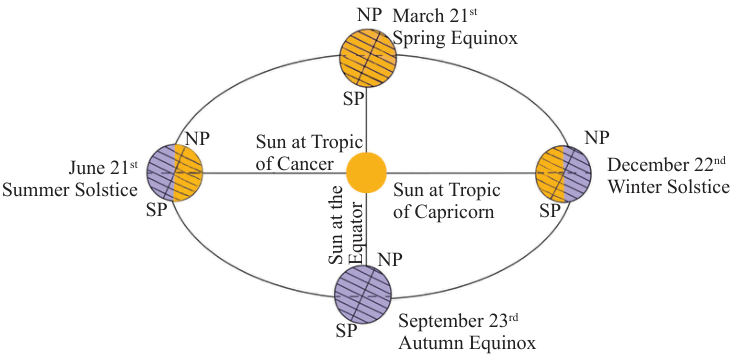
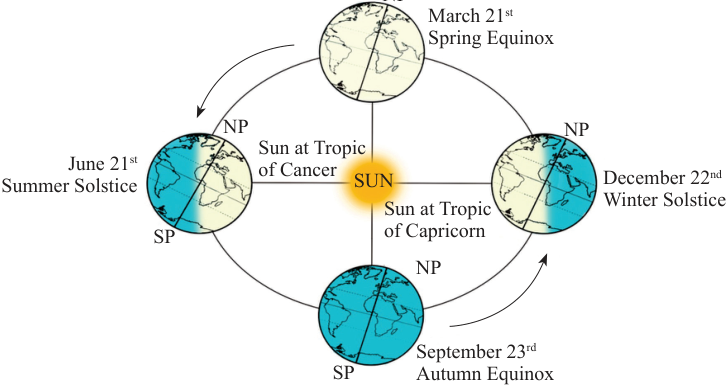

(ii) Changes of overhead sun
The position on Earth where the Sun is directly overhead changes throughout the year due to the tilt of the earth’s axis and its elliptical orbit around the Sun. The overhead sun appears to move northwards and southwards between latitudes 23½° N and 23½° S, that is, between the tropics of Cancer and Capricorn. For example, during the summer solstice in the Northern Hemisphere, the Sun is directly overhead at the Tropic of Cancer, while during the winter solstice, it is directly overhead at the Tropic of Capricorn. The places south of the Tropic of Capricorn and north of the Tropic of Cancer never experience overhead sun at any time of the year. This change of overhead sun creates the changing seasons and variations in daylight hours at different latitudes (Figure 3.6).
